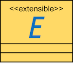

|
An Extensible Meta-modelling Assistant |
IEEE 20th The Enterprise Computing Conference, 2016. Viena, Austria. | Ángel Mora Segura, Ana Pescador, Juan de Lara, Manuel Wimmer | download | slides |

Extremo
An Extensible Modelling Assistant
From Angel Mora-Segura updated at June, 2016. September, 8th at EDOC2016
Abstract
Meta-models play a pivotal role in Model-Driven Engineering (MDE). They are used to create domain-specific models, and to type model management operations like model transformations or code generators. However, even though creating meta-models is a common activity, it is currently mostly a manual activity, which does not profit from existing knowledge.
In order to facilitate the meta-modelling task, in this paper we present an extensible modelling assistant. The assistant is useful both for constructing both models and meta-models.
The assistant system permits the provision of heterogeneous data description sources (like ontologies, RDF data, XML schemas, database schemas and meta-models), and enables their uniform querying. Different kinds of queries are supported, and improved through synonym search. Query results are prioritized through sense disambiguation, can be visualized graphically, and incorporated into the (meta-)model being built.
The assistant has been realized within Eclipse, and its architecture has been designed to be independent of the meta-modelling technology used. As a proof-of-concept, we show its integration within DSL-tao, a pattern-based meta-modelling tool built by our group, and two other modelling and meta-modelling tools developed by third-parties. The usefulness of the system is illustrated with a running example in the process modelling domain.
Demos
HINT! Right click > Show controls
#1_ Importing data sources and query
#2_ Integration with a modelling tool
#3_ Designing a metamodel from the recommended classes
Tool Support I: Extending the tool
Class diagram

#1_ Defining a new format assistant
Eclipse > New > Other > Plugin project > ... > Finish
In the MANIFEST insert a Dependency to metaRDF.core.extensions and to metaRDF.core. Both dependencies give access to the core classes of Extremo.
Add an extension to metardf.core.extensions.assistant and then a new Assistant. Give the assistant a name, a class implementation, and list the file extensions the assistant will be applied to.
A new all-methods-empty class should be created implementing the IFormatAssistant class. This class needs to parse your format to our class structure (shown in the class diagram above).
#2_ Extending the core model
Create a new package in your plugin and call it "assistant_package.model". There, extend the core classes of the plugin. The classes to be overwritten are:
metardf.core.model.impl.SemanticClassmetardf.core.model.impl.ObjectPropertymetardf.core.model.impl.DataProperty
Then, register the classes through the getRegisteredTypes() method in the assistant
With Extremo we provide 3 assistants to cover three of the main data entities in format representation:
- OWL
- RDF
- Ecore
getClassesLike(Map namesByRelevance) which receives a map composed by the strings suggested in the search and a weight value representing certain relevance to order the words. The weights are preset by the tool but they can be overwritten in the Extremo preference page.

Tool Support II: Modelling assistant

extremo.ui.extensions.actions
Illustrated with the UML2 Tree Editor, Extremo has an extension point to add actions to the view of entities. Then, the Editor Part will receive the selected elements. To transform the semantic classes into elements of the model the extension point needs to implement the method execute(IEditorPart editorPart, ISelection selection) and create new elements into the model.
extremo.ui.extensions.drop
Illustrated with an example of integrating Extremo in DSL-tao (a tool developed by our group). Extremo counts with an extension point to add a drop support to a Graphical Editor (based on GEF) inside Eclipse. The class that implements the extension point will receive a class with a handledrop(...) method that receives the list of semantic elements dragged to the editor.
Running example
The system is useful...
- for helping in the development of new metamodels for particular domains,
- for the creation of ‘concept’ meta-models (a minimal metamodel that gathers the core primitives within a domain),
- for creating models in different scenarios.